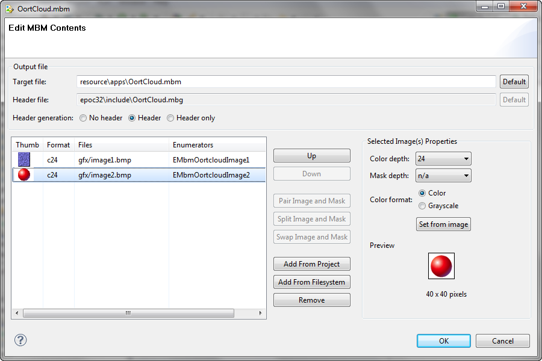

The MBM Editor allows you to specify the bitmaps that should be included in a Symbian multi-bitmap (MBM) file. Use of MBM files for general purpose graphics is restricted to using .bmp files and works for versions 2.x and later releases of the Symbian SDKs. For more information, see MBM File and Creating a MBM File.
The MBM Editor is shown when an MBM file is opened for editing:

Figure 1 - MBM Editor
| Item | Explanation |
|---|---|
| Target File | Specifies the EPOCROOT relative path for the compiled images. Click the Default button to set the target file based on the SDK and project name. |
| Header File | Shows the generated header file. Select the Header option in the Header Generation group to create a default .mbg file. The path cannot be edited in this field. |
| Header Generation | Options include:
|
| Up | Select an image in the list and click Up to move the selection one position up in the list. |
| Down | Select an image in the list and click Down to move the selection one position down in the list. |
| Pair Image and Mask | Select two adjacent unpaired BMP image entries in the list and click this button to combine the images together into image/mask pairs. |
| Split Image and Mask | Select a paired BMP image in the list and click this button to split the image into image and mask entries. |
| Swap Image and Mask | Select a paired BMP image in the list and click this button to swap the image and mask files and format information in paired image entries. |
| Add From Project | Click this button to open an Add Images from Project dialog to reference available images in the project. |
| Add From Filesystem | Click this button to open an Add Images From Filesystem dialog to locate and reference existing images in the filesystem or copy images to the project. |
| Remove | Select an image and click Remove to remove image entry from the list. This does not delete file from directory. |
| Color depth | Select the bit depth used to encode the image at build time. |
| Mask depth | Select the bit depth used to encode the mask at build time. Options include:
|
| Color format | Select Color to encode the image(s) as color or select Grayscale to encode the image(s) as grayscale. |
| Set from image | Click this button to auto-detect the image depth, mask depth, and color/grayscale setting from the image contents. |
| Preview | A preview of the image as it will appear at runtime. |